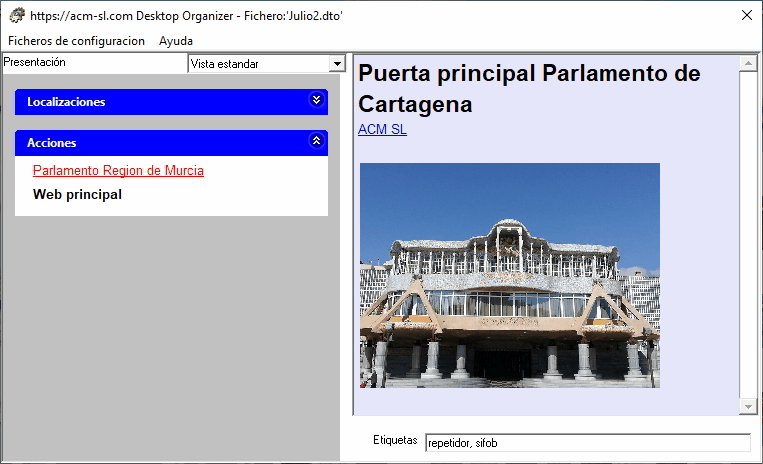

Usually, we make an effort in reading and understanding the documents we use. Sometimes we need to take note of some important detail about them, which leads to having to relate these notes with their respective documents. The Desktop Organizer has the concept of Comment associated with an Option (file, URL, executable, etc.) designed to:
- Write down comments about the Option or Group, very easily and quickly.
- Instant retrieval of these comments, when the mouse passes over the Option or Group.
This quick comments retrieval greatly facilitates the exploration of information. Moreover, the text of comments is also used in searches using free text.
The comments support a subset of HTML elements , the one used to create web pages, which gives great versatility in several aspects:
- The format of any part of the text can be changed to in bold, italic, underlined as well as to change the font family, size, and color.
- The comment may contain images.
- The comment may containg hyperlinks, both to an Internet URL or to internal location in the disk.
The list of HTML elements supported can be found here.
Next figure shows a Comment that includes several of these elements: (H1, hyperlink and image).
